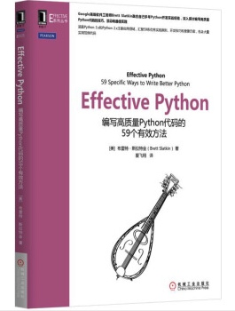

Effective Python 读书笔记
为什么写这个系列
在使用Python多年后，发现自己在写项目时存在很多不好的习惯，导致项目代码可读性、可维护、性能和可复用性都非常差。
在几次惨痛的经历后，开始反思其中的原因：
- 我是在基本无项目编程基础的情况下开始自学Python，导致很多规矩并不了解。
- 大部分场景都是写简短的脚本工具（300行以内），写这些工具的时候是怎么快怎么来，写完收工，根本不会想怎么写更合适。
更可怕的是根本没有意识到错在哪里，这就导致了这些臭毛病一直存在。
我相信大多数自学Python的朋友都存在同样的问题。
为了解决这个问题，我买了本《编写高质量Python代码的59个有效方法》，仔细读了两遍之后觉得受益匪浅，这本书从思想、语法、实现和应用等方面列出了59个方法来提升代码质量。

为了帮助存在同样问题的Pythoner战友们，我决定再读一遍，并认真整理读书笔记和解读每一条建议。
同时对于新人，我强烈建议在学习完基本语法之后马上开始学习这本书，养成良好的编码习惯，顺便了解一些高级的特性。
学习本专栏您能收获什么
说明
- 我写的示例基本上都是基于Python2.7。
- 很多内容是以我的经历和思维角度来分析，必然存在片面和歪楼的问题，还忘大家发现后及时指正。
目录及进度
- 第一章：用Pythonic方式来思考
- √ 第1条：确认当前的Python版本
- √ 第2条：遵循PEP8风格指南
- √ 第3条：了解bytes、str和unicode的区别
- √ 第4条：用辅助函数取代复杂的表达式
- √ 第5条：了解切割序列的方法
- √ 第6条：在单次切片操作中不要同指定start、end和stride
- √ 第7条：用列表推导来取代map和filter
- √ 第8条：不要使用含有两个以上表达式的推导
- √ 第9条：用生成器表达式来改写数据量较大的列表推导
- √ 第10条：尽量用enumerate取代range
- √ 第11条：使用zip函数同时遍历两个迭代器
- √ 第12条：不要在for和while循环后写else块
- √ 第13条：合理利用try/except/else/finally结构中的每个代码块
- 第二章：函数
- √ 第14条：尽量用异常表表示特殊情况，而不要用None
- √ 第15条：了解如何在闭包里使用外围作用域中的变量
- √ 第16条：用生成器来改写直接返回列表的函数
- √ 第17条：使用迭代器时，要多加小心
- √ 第18条：用*args来减少函数入参的视觉杂讯
- √ 第19条：用关键字参数来表达可选行为
- √ 第20条：用None和文档来描述具有动态默认值的入参
- √ 第21条：用只能以关键字形式指定的参数来确保代码明晰
- 第三章：类与继承
- √ 第22条：尽量用辅助类来维护程序的状态，而不要用字典与元组
- √ 第23条：简单的接口应该接受函数，而不是类的实例
- √ 第24条：以@classmethod形式的多态去通用的构建对象
- √ 第25条：用super初始化父类
- √ 第26条：只在使用Mix-in组件制作工具类时进行多重继承 2018-08-18
- 第27条：多用public属性，少用private属性
- 第28条：继承collections.abc以实现自定义的容器类型
- 第四章：元类及属性
- 第29条：用纯属性来取代get和set方法
- 第30条：考虑用@property来代替属性重构
- 第31条：用描述符来改写需要利用的@property方法
- 第32条：用__getattr__、__getattribute__和__setattr_实现按需生成的属性
- 第33条：用元类来验证子类
- 第34条：用元类来注册子类
- 第35条：用元类来注解类的属性
- 第五章：并发与并行
- 第36条：用subprocess模块来管理子进程
- 第37条：可以用线程来执行阻塞式I/O，但不要用它来做平行计算
- 第38条：在线程中使用Lock来防止数据竞争
- 第39条：用Queue来协调各线程之间的工作
- 第40条：考虑用协程来并发地运行多个函数
- 第41条：考虑用concurrent.futures来实现真正的平行计算
- 第六章：内置模块
- 第42条：用functools.wraps定义函数装饰器
- 第43条：以contextlib和with语句来改写可复用的try/finally代码
- 第44条：用copyreg实现可靠的pickle操作
- 第45条：应该用datetime模块来处理本地时间，而不是time模块
- 第46条：使用内置的算法与数据结构
- 第47条：在重视精确度的场合，应该使用decimal
- 第48条：学会安装由Python开发者社区所构建的模块
- 第七章：协作开发
- 第49条：为每个函数、类和模块编写文档
- 第50条：用包来安排模块，并提供稳固的API
- 第51条：为自编的模块定义根异常，以使用将调用者与API隔离
- 第52条：用适当的方式打破循环依赖关系
- 第53条：用虚拟环境隔离项目，并重建其依赖关系
- 第八章：部署
- 第54条：考虑用模块级别的代码来配置不同的部署环境
- 第55条：通过repr字符串来输出调试信息
- 第56条：用unittest来测试全部代码
- 第57条：考虑用pdb实现交互调试
- 第58条：先分析性能，然后再优化
- 第59条：用tracemalloc来掌握内存的使用及泄露情况
打√的为已经写完的部分
Copyright © 2015 Powered by MWeb, Theme used GitHub CSS.